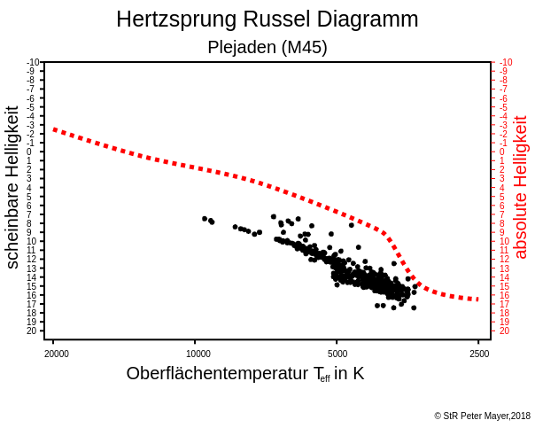

Astro Apps
Astro Apps
Untersuchung von Cepheiden
Cepheiden - Lichtkurven
Cepheiden - Periode Helligkeit Beziehung

Untersuchung von Sternhaufen
HDR - Entfernungsmodul
Untersuchung von Supernovae
Supernovae - Lichtkurven
Supernovae - Spektren